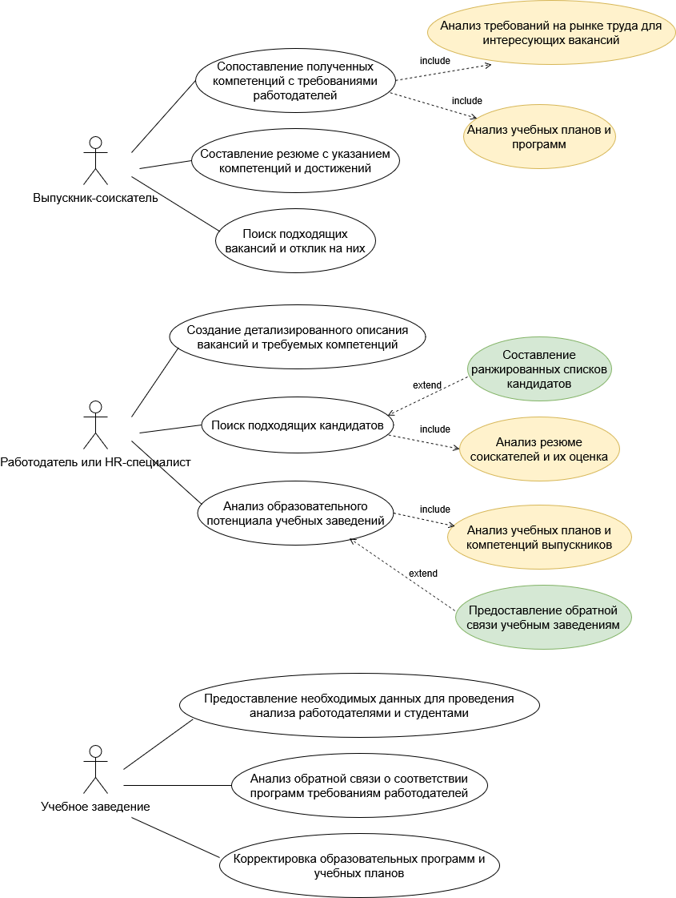

Факультет: компьютерных технологий и прикладной математики
Кафедра: информационных технологий
Специальность: 01.04.02 Прикладная математика и информатика
Тема магистерской диссертации: Интеллектуальные технологии целевого подбора персонала для ИТ-отрасли
Научный руководитель: канд. техн. наук, доц. Полетайкин Алексей Николаевич
Материалы по теме: Резюме | Библиотека | Ссылки | Отчет о поиске | Индивидуальный раздел
Одной из самых острых проблем современной национальной экономики является проблема трудоустройства и профессионального развития студентов и выпускников образовательных организаций высшего образования. Ситуация вызвана несоответствием между навыками и знаниями студентов, полученными в результате освоения образовательных программ, и требованиями рынка труда, выдвигаемыми работодателями. Особенно остро это проявляется в сфере информационных технологий, где отрасль разрабатывает и внедряет новые инструменты и языки программирования значительно быстрее, чем вузы обновляют соответствующие стандарты и учебные программы.
Другой проблемой являются сложности в обеспечении эффективного подбора компаниями квалифицированных кадров. Традиционные подходы к подбору персонала ориентированы на анализ резюме и собеседования, что не позволяет получить достаточно полную и объективную оценку кандидата, особенно выпускника без большого опыта. Именно поэтому целесообразным становится целевой подход, в котором учитываются данные об образовательной среде, в которой формировались компетенции будущего специалиста. Существующие методы оценивания вузов не адаптированы для решения кадровых задач и не учитывают сложную структуру образовательного потенциала.
Актуальность темы обусловлена необходимостью обеспечить взаимодействие между работодателями и университетами с целью приведения компетенций выпускников в соответствие с требованиями рынка труда, а также упростить и автоматизировать работу специалистов по подбору персонала. Работа посвящена созданию интеллектуального помощника, реализующего поисковую, аналитическую и управляющую функции для оценки образовательного потенциала и поддержки принятия решений при подборе молодых специалистов.
Целью исследования является разработка моделей и методов оценивания образовательного потенциала вузов и семантического сопоставления компетенций выпускников с требованиями работодателей для задач целевого подбора персонала в ИТ-отрасли, а также создание на их основе модулей цифрового сервиса.
Основные задачи исследования:
Объект исследования: процесс взаимодействия между высшими учебными заведениями и рынком труда в контексте подготовки и трудоустройства выпускников IT-специальностей.
Предмет исследования: модели и методы анализа образовательного потенциала учебных заведений и семантического сопоставления компетенций выпускников с требованиями работодателей.
В рамках магистерской работы планируется получение актуальных научных результатов по следующим направлениям:
В качестве практических результатов планируется разработка модулей цифрового сервиса на Python с использованием библиотек pandas, numpy, scipy, sklearn и pulp, СУБД SQLite и SQLAlchemy ORM.
Профессионально-образовательное пространство личности в контексте ИТ-отрасли — это социально-культурное понятие, объединяющее систему образования и рынок ИТ-вакансий. Оно оказывает существенное влияние на отношение человека к своему профессиональному будущему и на формирование траектории его профессионального развития. Профессиональное становление охватывает период с момента появления профессиональных интересов и предпочтений до момента прекращения профессиональной деятельности. Главной особенностью ИТ-отрасли является её динамичность: технологии, фреймворки и методологии обновляются значительно быстрее, чем в большинстве других сфер, поэтому непрерывное образование служит не только предпосылкой успеха, но и обязательным условием сохранения конкурентоспособности.
Особенностью профессионально-образовательного пространства является его открытость, нелинейность и неравновесность, обусловливающие потенциал для самоорганизации и саморазвития как для личности, так и для институтов, формирующих его, — вузов и работодателей. С другой стороны, эти свойства вызывают и существенные проблемы: выпускники сталкиваются с трудностями, связанными с отсутствием ясности в условиях избыточной информации о требованиях рынка труда и образовательных возможностях, а также с разрывом между действительно актуальными для работодателей технологиями и существующими образовательными программами. Вузы вынуждены оперативно адаптировать учебные планы, а работодатели — объективно оценивать образовательный потенциал университетов и искать кандидатов, действительно обладающих необходимыми компетенциями.
В качестве участников профессионально-образовательного пространства выделяются студент ИТ-направления вуза, выпускник-соискатель, работодатель (HR-специалист ИТ-компании) и само образовательное учреждение. Студент — личность на ранних этапах профессионального становления; его цель состоит в навигации в образовательном пространстве для формирования собственной траектории развития с учётом требований рынка труда и их сопоставления с имеющимися учебными планами, курсами и дисциплинами. Выпускник-соискатель — личность на этапе входа в профессиональную среду; его ключевая проблема — поиск работы с использованием агрегаторов вакансий на основе сопоставления и оценки полученных компетенций и требований рынка труда. Работодатель и HR-специалист решают задачи оценки образовательного потенциала учебных заведений и поиска подходящих кандидатов. Учебное заведение — институт, формирующий это пространство; его задача — обеспечение конкурентоспособности выпускников за счёт составления и своевременной корректировки учебных планов и программ.
Общая структура рассматриваемого образовательного пространства для ИТ-отрасли приведена на рисунке 1 в виде диаграммы вариантов использования. На ней отражены цели и взаимодействия всех четырёх участников: анализ требований рынка труда, составление резюме, поиск вакансий и отклик на них (выпускник-соискатель); создание описания вакансий, поиск кандидатов, анализ образовательного потенциала учебных заведений и обратная связь (работодатель/HR); предоставление данных, анализ обратной связи и корректировка образовательных программ (учебное заведение).

Рисунок 1 – Диаграмма вариантов использования, демонстрирующая структуру образовательного пространства
Существующие агрегаторы вакансий автоматически собирают информацию об открытых предложениях, однако они работают с чисто формальными, зачастую устаревшими признаками — названиями специальностей и ключевыми словами, не отражающими семантическое соответствие между содержанием образовательной программы и сутью профессиональной деятельности. Рабочие программы дисциплин и аннотации к ним ограничены, не всегда актуальны и их сложно собрать в единую картину. Именно поэтому для ИТ-отрасли особую актуальность приобретают интеллектуальные технологии целевого подбора персонала, базирующиеся на методах обработки естественного языка и машинного обучения. Они позволяют структурировать и анализировать открытое профессионально-образовательное пространство, переводя его качественные характеристики в количественные метрики, что облегчает принятие решений для всех участников этого пространства.
Образовательный потенциал вуза рассматривается как интегральная характеристика, вычисляемая на основе двадцати показателей k1, ..., k20, сгруппированных в шесть индексов: кадровый потенциал (I1), научно-исследовательский потенциал (I2), материально-техническая база (I3), учебно-методический потенциал (I4), финансовый потенциал (I5) и социальная инфраструктура (I6). Каждый индекс агрегирует группу первичных показателей, отражающих соответствующую сторону деятельности вуза.
Поскольку исходные показатели имеют разные единицы измерения, для каждого из них выполняется min-max нормирование, приводящее значения к единому интервалу [0, 1]:
knorm = (kфакт − kmin) / (kmax − kmin),
где kфакт — исходное вещественное значение показателя, kmin и kmax — минимальное и максимальное значения показателя по рассматриваемой выборке вузов. Нормированные показатели агрегируются в групповые индексы Ii (i = 1, ..., 6).
Образовательный потенциал вычисляется как взвешенная сумма групповых индексов:
Op = Σi=16 αi · Ii, Σi=16 αi = 1,
где αi — весовые коэффициенты, отражающие важность каждой группы показателей; полученное значение потенциала лежит в интервале [0, 1].
Определение весов αi и βji является главной сложностью линейной модели, поэтому они подбираются с помощью метода анализа иерархий (МАИ) Т. Саати. Процедура включает:
Для каждой j-й должности задаётся вектор экспертных весов βj = (βj1, ..., βj6), а итоговая оценка того, насколько вуз подходит для подбора персонала на данную должность, рассчитывается по формуле:
Rj = Σi=16 βji · Ii, Σi=16 βji = 1,
где Ii — рассчитанный нормированный групповой индекс i-й составляющей образовательного потенциала, βji — вес i-й группы для j-й должности. Рассматриваются пять должностных профилей: научный сотрудник, инженер-конструктор, менеджер по продажам, финансовый аналитик, IT-разработчик. Для научного сотрудника максимальный вес отдан научно-исследовательскому индексу (0,40), для инженера-конструктора — материально-технической базе (0,35), для менеджера по продажам — социальной инфраструктуре (0,50).
Кластеризация вузов выполняется с использованием алгоритма K-Means на стандартизованных групповых индексах с выбором оптимального числа кластеров методом локтя (в нашем случае три кластера: научно-ориентированные, технически оснащённые и сбалансированные). Для прогнозирования успешности выпускников используется Random Forest, целевая переменная формируется как линейная комбинация значения образовательного потенциала вуза, среднего балла выпускника, наличия публикаций и стажировки с добавлением случайной ошибки:
Y = c1·Op + c2·GPA + c3·Pub + c4·Intern + ε,
где c1–c4 — коэффициенты, Pub — наличие публикаций, Intern — наличие стажировки, ε — случайная ошибка. Оптимизационная задача распределения ресурсов работодателя решается методами целочисленного линейного программирования (библиотека PuLP) с ограничениями на бюджет и количество выделенных для целевого подбора вакансий.
Итоговое ранжирование вузов формируется как комбинация результатов линейной аддитивной модели и ML-блока. Для сопоставления двух ранжирований используется коэффициент ранговой корреляции Спирмена:
ρ = 1 − (6 · Σdi2) / (n · (n2 − 1)),
где di — разность рангов i-го вуза в двух ранжированиях, n — общее число вузов. В результате коэффициент составил в среднем 0,6–0,8. Наибольшее согласие зафиксировано для должности инженер-конструктор (корреляция более 0,85), наименьшее — для менеджера по продажам (около 0,4). Это подтверждает, что линейная модель и ML-подход дополняют друг друга: первая прозрачна и применима без исторических данных, второй точнее улавливает нелинейные зависимости.
Линейная аддитивная модель с весами, подобранными методом анализа иерархий, обладает достоинствами прозрачности, простоты интерпретации и применима при отсутствии исторических данных об успешности выпускников. Она хорошо подходит для предварительного ранжирования вузов. Методы машинного обучения автоматически выявляют сложные нелинейные отношения, дают более точный прогноз успешности и открывают возможности для оптимизационных моделей распределения ресурсов, но требуют исторических данных и сложнее в интерпретации.
При написании данного реферата магистерская работа ещё не завершена. Полный текст работы и материалы по теме могут быть получены у автора или его руководителя после защиты.